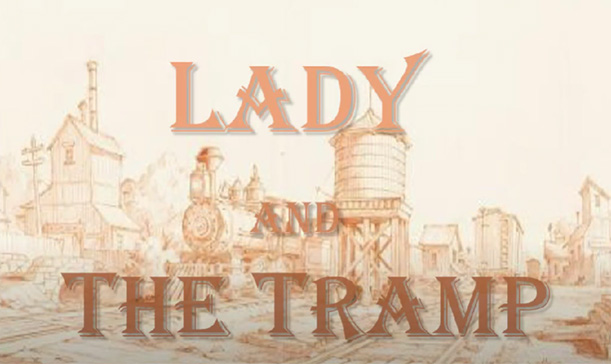
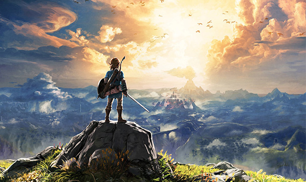

Burn Out
This video was my final "personal project" for web video last semester. For this video I anonymously interviewed students from Illinois State University's College of fine arts about how they felt their course load here affected their quality of life. As a former music ed student here I saw that many other School of Music students were also taking 10-12 classess a semester, and this was considered the norm. Many students complained about how heavy their course load was each semester and that it severly impacted their mental health, this is what inspired me to create this video.
Texts and Titles
This video was another project from Web Video, the assignment was to create a text based video or a new title sequence for a movie. The first movie that popped into my head for a title sequence was Lady and The Tramp, so I recreated the entire beginning credit scene!
Music Alumni Project
This video was another project from Web Video, the assignment was to create a video with pictures from the school of music as a christmas slideshow for the SOM to share on their social media
Level Analysis Video
In this video I walk through the things that make Breath of the Wild's Great Platau area an amazing first level! This was an assignment for game design 2 where we had to make a 8-20 minute video analyzing a video games intro level